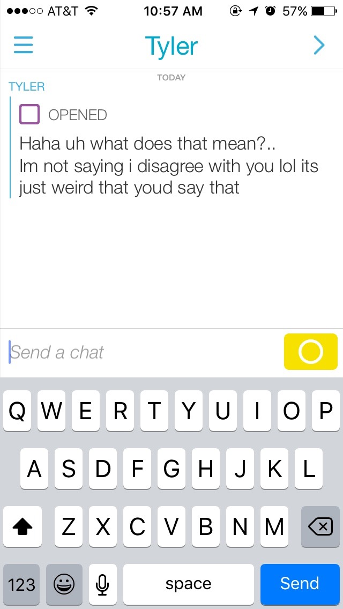

As part of my experimentation with the project, I decided to send the videos to a couple people: one female friend and one male friend. My hopes with sending them these videos was to evoke a response from each of them. With the polarizing nature of the poem, I assumed that the difference in responses from the two people would be vast. Below are the responses I recieved from everyone:
As you can see, most everyone seemed at least a little bit confused about what was going on. That being said, I do think that the video was successful in expressing what I was trying to get across. Carlee, in particular, responded in the way I was hoping for.
The goal of this project is to experiment with context and meaning of a text by publishing it on various online platforms and social media websites.
These are all questions that are to be explored throughout the exercise and experiments made along the way.
I decided to use the Snapchat app as my platform. Snapchat is an application that can be downloaded on any smartphone and is used to send photos and videos to other users. The reason that I chose Snapchat is because the app allows for many forms visual communication that can enhance the meaning of any message. With Snapchat, you can send pictures, photos, audio, and text- or a combination of all four.
Additionally, Snapchat is designed as a communcation tool- this means that I was able to use the platform in a way that evokes a conversationa and response.
Finally, there are many third-party apps attached to Snapchat that are used to manipulate the ways in which you send messages. For example, the Snapchat App only offers one choice of typeface, but there is an app called "Uploader" that can be downloaded which gives the user access to hundreds of additional fonts for free. By using third-party apps, I was able to push the boundaries of Snapchat and was given far more opportunities for personalization of messages than I would have if I had only relied solely on Snapchat.
Below are the three main apps that were used in the production of this project:
Below are the third party apps that were used to edit and manipulate the videos that were then shared on Snapchat:
Although it was hard for me to understand at the beginning of the project, I can clearly see now that we are learning the ways in which text interpretation relies heavily on the context in which it is presented. This means that the text is not the only thing that you are "reading"... The platform, images, sounds, and videos all play a huge role in the way that someone will decipher a message.
Secondly, I learned a lot about the platform itself. Prior to this project, I had no idea how people were able to change the standard settings given by Snapchat, but I now know how to manipulate and stretch the boundaries of Snapchat through third party applications.
Thirdly, through the experimentation with responses from two friends, I learned that everything that is published and viewable will evoke some sort of response. These interactions will vary from person to person depending on their demographics as well as other factors, which tells us that not only the context of the platform itself is playing a part in personal interpretation of the text, but also the individual viewer's personal context.